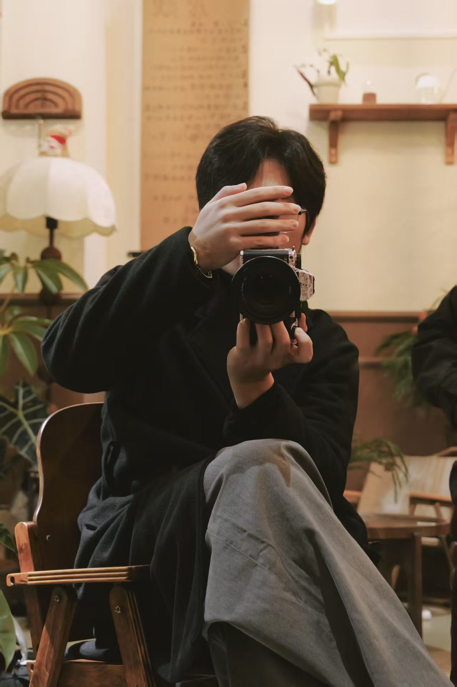
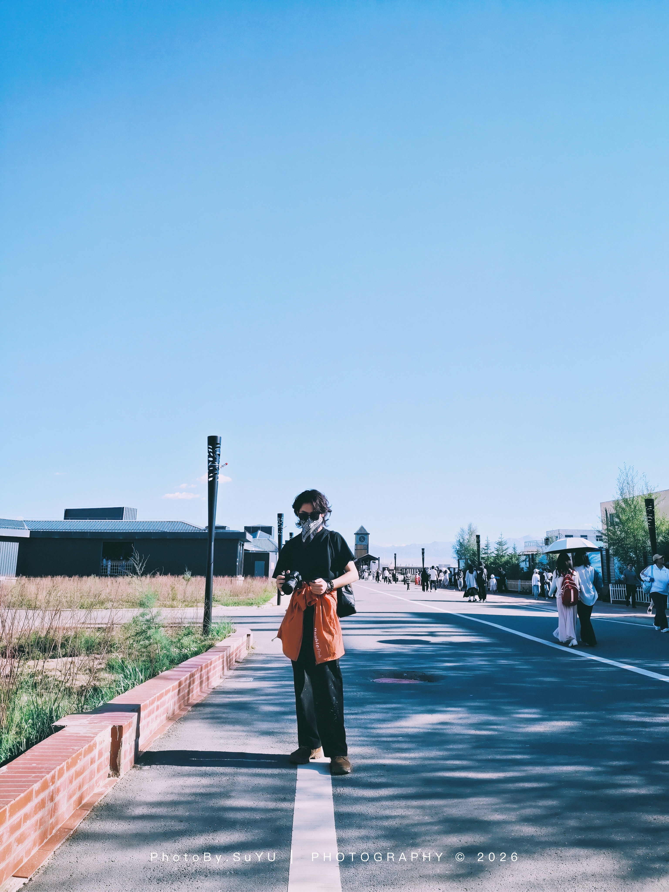
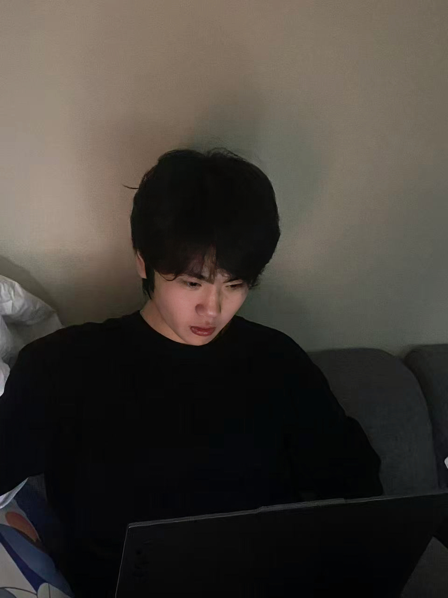
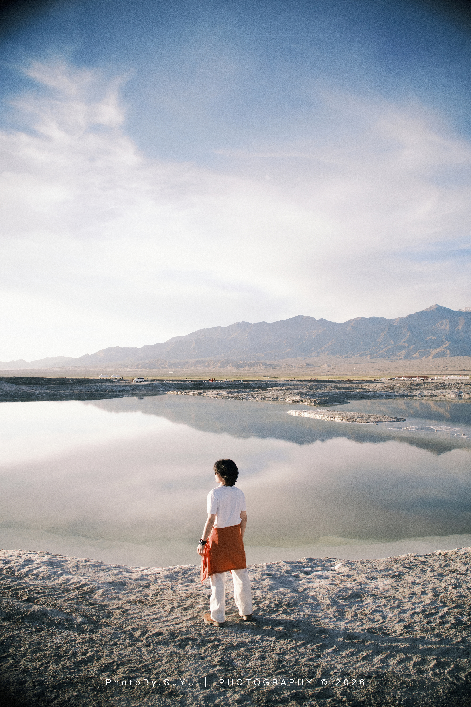

人生不止一瞬，美自恒存，亦是我心之所向。这便是工作室的初心，也是我的目光，所要触及的风景。
主营摄影与动态影像：婚纱、活动、肖像、宣传片、旅拍，一站式交付静帧照片与动态影片。
柔光 cinematic｜清透奶油｜情绪纪实
于光影之中寻找审美同频的伙伴，共勉，共创。
工坊 / ATELIER：SY·LUMEN ATEL｜予光主理人 / OWNER：SuYU媒介 / MEDIUM：摄影 & 摄像从业年限：3 年